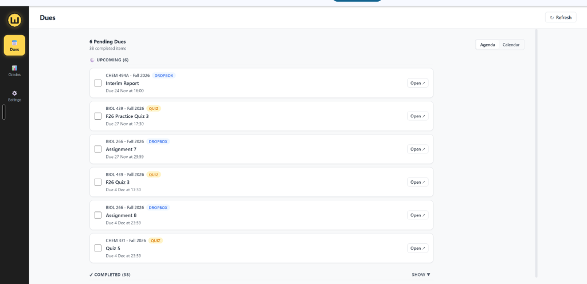
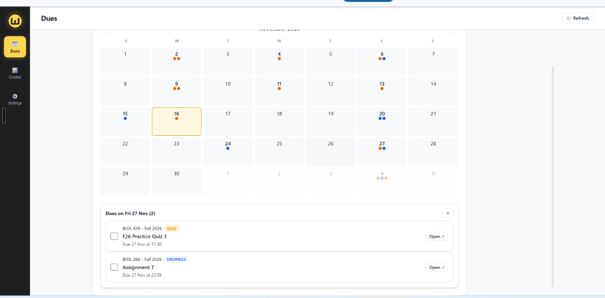
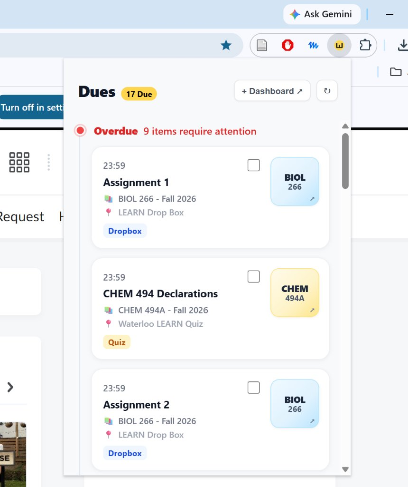
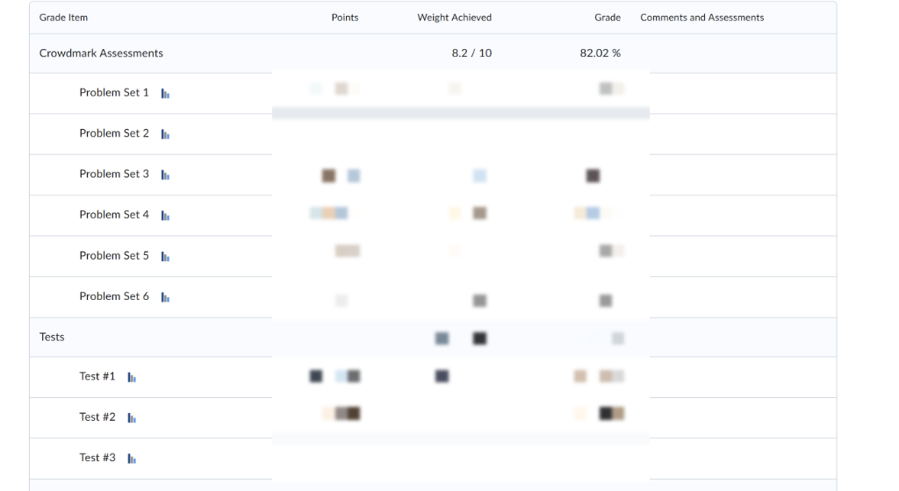

WatToDue
v1.0.0
WatToDue pulls all your assignment dropboxes, quizzes, and grade feedback across your Waterloo LEARN courses into one clean, high-performance schedule.

Engineered for how Waterloo students actually study
Eliminate tab switching. Syncs all assignments, dropboxes, and quizzes across all active Fall, Winter, and Spring terms.
Organized in the exact Waterloo LEARN category tree. Unmarked future assessments (0%) are masked as Ungraded so your real average shines.
Automatically differentiates Lectures (LEC), Laboratories (LAB like CHEM 220L), Tutorials (TUT), and Tests (TST).
Clean, elegant, and fast

Select any date with due indicators to inspect side-by-side cards, exact submission times, and deep links.

Stay on top of what is due next without opening a new tab. Check off finished tasks or jump directly to the submission folder.

Browse Problem Sets, Tests, and Reflections nested neatly under category folders with real-time weights and direct links to view quiz attempts.
Set up in 30 seconds
No developer skills required. Just download and load.
Download the latest WatToDue.zip release and unzip it to a folder on your computer.
In Google Chrome, navigate to chrome://extensions and toggle Developer mode in the top-right corner.
Click the Load unpacked button and select the unzipped WatToDue folder. Pin WatToDue to your toolbar and log in to Waterloo LEARN!